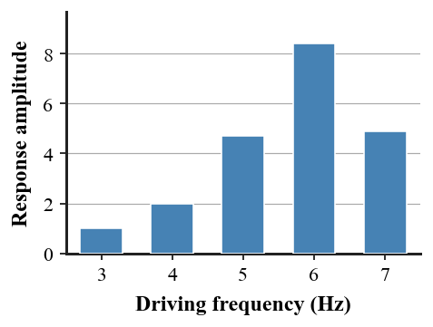
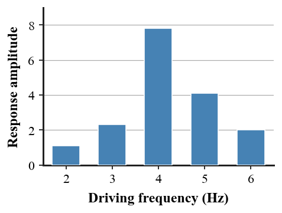
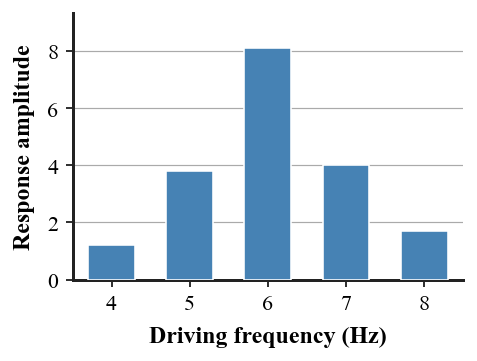
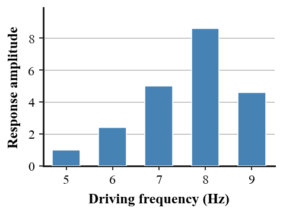
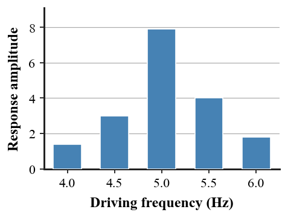

Directions: Answer questions 1–16 on the answer sheet. Complete questions 17–20 on the back of the answer sheet. You may write on this assessment copy, but only the answer sheet gets graded.
1. [DOK 1 · Section 5.1] Which wave feature is indicated by X?
A. frequency
B. period
C. compression
D. amplitude
E. crest
2. [DOK 1 · Section 5.1] A rope pulse travels right while marked points on the rope move up and down. How should the wave be classified?
A. longitudinal
B. both
C. not enough information
D. standing wave
E. transverse
3. [DOK 1 · Section 5.3] Two astronauts are separated only by an ideal vacuum. Can a direct sound wave travel from one to the other?
A. No; there is no material medium.
B. vacuum
C. light
D. gravity
E. water
4. [DOK 1 · Section 5.2/5.4/5.5] A shout returns from a canyon wall. Which wave phenomenon is most directly involved?
A. refraction
B. reflection
C. resonance
D. interference
E. Doppler effect
5. [DOK 1 · Section 5.1] Which description best matches frequency?
A. amplitude
B. wavelength
C. the number of cycles completed each second
D. frequency
E. period
6. [DOK 2 · Section 5.1] A wave has frequency 4 Hz and wavelength 2.5 m. Determine its speed.
A. 2.5 m/s
B. 6 m/s
C. 8 m/s
D. 10 m/s
E. 9 m/s
7. [DOK 2 · Section 5.1] A wave completes one cycle every 0.25 s. What is its frequency?
A. 0.25 Hz
B. 1 Hz
C. 2 Hz
D. 8 Hz
E. 4 Hz
8. [DOK 2 · Section 5.2] At one location two waves have displacements +3 cm and +2 cm. What is the resulting displacement and interaction?
A. +5 cm; constructive interference
B. +1 cm; destructive interference
C. 0 cm; complete cancellation
D. -5 cm; constructive interference
E. +6 cm; constructive interference
9. [DOK 2 · Section 5.4] A hiker hears an echo 1.2 s after shouting. Use 340 m/s. How far away is the cliff?
A. 102 m
B. 204 m
C. 340 m
D. 408 m
E. 680 m
10. [DOK 2 · Section 5.5] Two steady tones have frequencies 256 Hz and 260 Hz. What beat frequency is heard?
A. 1 Hz
B. 2 Hz
C. 4 Hz
D. 5 Hz
E. 8 Hz
11. [DOK 2 · Section 5.3] Sound travels at 340 m/s with frequency 170 Hz. What is its wavelength?
A. 0.5 m
B. 1.0 m
C. 170 m
D. 2.0 m
E. 510 m
12. [DOK 3 · Section 5.3] A student says, “A louder sound must have a higher pitch.” Which response best corrects the claim?
A. Pitch and loudness always rise together.
B. Amplitude controls pitch and frequency controls loudness.
C. Frequency must increase whenever amplitude increases.
D. A quieter sound always has a longer wavelength.
E. Loudness depends mainly on amplitude, while pitch depends mainly on frequency.
13. [DOK 3 · Section 5.2] The source moves to the right. Which observer detects the greater frequency?
A. Observer R, because wavefronts arrive more often there.
B. Sound always travels faster in front of a moving source.
C. The source must change its emitted frequency whenever it moves.
D. Observer L, because wavefronts arrive more often there.
E. Wavefronts reach the listener less often as the source moves away.
14. [DOK 3 · Section 5.3] A movie shows a loud explosion heard directly across empty space. Which critique is most accurate?
A. Sound becomes transverse in a vacuum and continues normally.
B. Sound is a mechanical wave; without a material medium, the direct sound cannot cross the vacuum.
C. Sound speed becomes infinite when particles are absent.
D. Radio signals are electromagnetic; equipment converts them to sound after the signal reaches a receiver.
E. With fewer particles available, less sound energy is transmitted through the gas.
15. [DOK 3 · Section 5.4] Use the response graph. Which conclusion about resonance is best supported?

A. The natural frequency is near 4 Hz because lower frequencies always resonate more.
B. Resonance occurs equally at every driving frequency.
C. The system’s natural frequency is near 6 Hz because the response is largest there.
D. The graph proves amplitude always increases as frequency increases.
E. The smallest response identifies the natural frequency.
16. [DOK 4 · Section 5.5] A student claims one constant tone can make a busy classroom completely silent. Which evaluation is strongest?
A. Cover every surface with hard metal so all sound reflects strongly.
B. One constant anti-tone will cancel every possible sound everywhere in the room.
C. Remove all material from the room so sound has no medium.
D. The claim is weak because real noise contains many changing frequencies; effective control must match target waveforms or use passive absorption.
E. Increase speaker amplitude until unwanted sound is hidden.
Free Response — Questions 17–20
Show work for full credit. Clearly identify final answer(s). Use diagrams, labels, units, and physics vocabulary when appropriate.
17.[Section 5.1] A wave on a cord has period $0.25\,\text{s}$ and wavelength $3.0\,\text{m}$. Determine the wave speed. Your work should use the period to determine the needed intermediate quantity before the final speed.
18.[Section 5.4/5.5] A sonar system first tests a known reflector $300\,\text{m}$ away; its echo returns in $0.40\,\text{s}$. In the same water, an unknown target produces an echo after $0.80\,\text{s}$. Determine the distance to the unknown target.
19.[Section 5.2] Use the standing-wave model shown. Explain why fixed nodes and large-motion antinodes are evidence of a standing wave rather than one pulse simply traveling away. Include the role of superposition.
20.[Section 5.4/5.5] A classroom has strong echoes and a proposed solution is to cover one wall with smooth metal. Critique the proposal and recommend a more effective first change. Defend your recommendation using reflection and absorption.
Unit 5 Summative Assessment
Version 2
Name:
Version: 2
Directions: Answer questions 1–16 on the answer sheet. Complete questions 17–20 on the back of the answer sheet. You may write on this assessment copy, but only the answer sheet gets graded.
1. [DOK 1 · Section 5.1] Identify the wave feature shown by the X marker.
A. wavelength
B. frequency
C. period
D. compression
E. crest
2. [DOK 1 · Section 5.1] A compression travels along a spring while its coils move back and forth parallel to the travel direction. How should the wave be classified?
A. transverse
B. longitudinal
C. both
D. not enough information
E. standing wave
3. [DOK 1 · Section 5.3] A swimmer hears a boat motor underwater. What material is acting as the sound medium?
A. vacuum
B. light
C. water
D. gravity
E. No; there is no material medium.
4. [DOK 1 · Section 5.2/5.4/5.5] An ambulance siren is heard at a higher pitch as it approaches. Which phenomenon is this?
A. reflection
B. refraction
C. resonance
D. Doppler effect
E. interference
5. [DOK 1 · Section 5.1] Which description best matches period?
A. amplitude
B. wavelength
C. frequency
D. period
E. the time required for one complete cycle
6. [DOK 2 · Section 5.1] A wave has frequency 6 Hz and wavelength 1.5 m. Determine its speed.
A. 9 m/s
B. 2.5 m/s
C. 6 m/s
D. 8 m/s
E. 10 m/s
7. [DOK 2 · Section 5.1] A wave has a frequency of 5 Hz. What is its period?
A. 0.05 s
B. 0.20 s
C. 0.50 s
D. 5 s
E. 20 s
8. [DOK 2 · Section 5.2] At one location two waves have displacements +4 cm and -4 cm. What is the resulting displacement and interaction?
A. +8 cm; constructive interference
B. -8 cm; constructive interference
C. 0 cm; complete destructive interference
D. +4 cm; partial interference
E. -4 cm; partial interference
9. [DOK 2 · Section 5.4] A clap echo returns in 0.40 s. Use 340 m/s. How far away is the wall?
A. 34 m
B. 136 m
C. 170 m
D. 68 m
E. 340 m
10. [DOK 2 · Section 5.5] Two steady tones have frequencies 440 Hz and 444 Hz. What beat frequency is heard?
A. 1 Hz
B. 2 Hz
C. 5 Hz
D. 8 Hz
E. 4 Hz
11. [DOK 2 · Section 5.3] Sound travels at 340 m/s with frequency 425 Hz. What is its wavelength?
A. 0.80 m
B. 0.40 m
C. 1.25 m
D. 85 m
E. 765 m
12. [DOK 3 · Section 5.3] A speaker volume is increased while the musical note stays the same. Which wave change best matches the situation?
A. Pitch and loudness always rise together.
B. Amplitude increases while frequency can stay the same.
C. Amplitude controls pitch and frequency controls loudness.
D. Frequency must increase whenever amplitude increases.
E. A quieter sound always has a longer wavelength.
13. [DOK 3 · Section 5.2] A train horn seems lower-pitched just after the train passes a stationary listener. Which explanation is best?
A. Sound always travels faster in front of a moving source.
B. The source must change its emitted frequency whenever it moves.
C. Wavefronts reach the listener less often as the source moves away.
D. Observer L, because wavefronts arrive more often there.
E. Observer R, because wavefronts arrive more often there.
14. [DOK 3 · Section 5.3] A student says, “Astronaut radio proves sound travels through space.” Which response is best?
A. Sound becomes transverse in a vacuum and continues normally.
B. Sound speed becomes infinite when particles are absent.
C. Sound is a mechanical wave; without a material medium, the direct sound cannot cross the vacuum.
D. Radio signals are electromagnetic; equipment converts them to sound after the signal reaches a receiver.
E. With fewer particles available, less sound energy is transmitted through the gas.
15. [DOK 3 · Section 5.4] The system was tested at several driving frequencies. Which claim is best supported by the response graph?

A. The natural frequency is near 2 Hz because lower frequencies always resonate more.
B. Resonance occurs equally at every driving frequency.
C. The graph proves amplitude always increases as frequency increases.
D. The smallest response identifies the natural frequency.
E. The system’s natural frequency is near 4 Hz because the response is largest there.
16. [DOK 4 · Section 5.5] A gym has excessive reverberation during assemblies. Which redesign best balances speech clarity and useful audibility?
A. Add absorptive ceiling/wall treatments at major reflection surfaces while keeping some reflective area for useful sound distribution.
B. Cover every surface with hard metal so all sound reflects strongly.
C. One constant anti-tone will cancel every possible sound everywhere in the room.
D. Remove all material from the room so sound has no medium.
E. Increase speaker amplitude until unwanted sound is hidden.
Free Response — Questions 17–20
Show work for full credit. Clearly identify final answer(s). Use diagrams, labels, units, and physics vocabulary when appropriate.
17.[Section 5.1] Determine the speed of a wave with period $0.20\,\text{s}$ and wavelength $2.5\,\text{m}$. Calculate the intermediate frequency needed for the final answer.
18.[Section 5.4/5.5] A sonar calibration target $225\,\text{m}$ away returns an echo in $0.30\,\text{s}$. A second target in the same water returns an echo in $0.60\,\text{s}$. Determine the second target’s distance.
19.[Section 5.2] The standing-wave pattern contains fixed points and regions of large oscillation. Explain what those two kinds of locations represent and how overlapping waves create the pattern.
20.[Section 5.4/5.5] A gym needs clearer speech during assemblies. Propose one surface treatment and one placement choice, then explain why the combination should reduce excessive reverberation without trying to eliminate all reflection.
Unit 5 Summative Assessment
Version 3
Name:
Version: 3
Directions: Answer questions 1–16 on the answer sheet. Complete questions 17–20 on the back of the answer sheet. You may write on this assessment copy, but only the answer sheet gets graded.
1. [DOK 1 · Section 5.1] What feature of the transverse wave does X mark?
A. frequency
B. period
C. trough
D. compression
E. crest
2. [DOK 1 · Section 5.1] Particles in a medium move perpendicular to the direction the disturbance travels. Which wave type matches the evidence?
A. longitudinal
B. both
C. not enough information
D. transverse
E. standing wave
3. [DOK 1 · Section 5.3] A mechanic puts an ear against a steel rail and hears a distant impact. What material carries much of the sound to the ear?
A. vacuum
B. light
C. gravity
D. No; there is no material medium.
E. steel
4. [DOK 1 · Section 5.2/5.4/5.5] A swing grows to a large amplitude when pushes match its natural rhythm. Which phenomenon is this?
A. resonance
B. reflection
C. refraction
D. interference
E. Doppler effect
5. [DOK 1 · Section 5.1] Which term means maximum displacement from equilibrium?
A. wavelength
B. amplitude
C. frequency
D. period
E. wave speed
6. [DOK 2 · Section 5.1] A wave has frequency 3 Hz and wavelength 3 m. Determine its speed.
A. 2.5 m/s
B. 6 m/s
C. 9 m/s
D. 8 m/s
E. 10 m/s
7. [DOK 2 · Section 5.1] In one medium a wave travels at 6 m/s with frequency 6 Hz. What is its wavelength?
A. 0.5 m
B. 6 m
C. 12 m
D. 1 m
E. 36 m
8. [DOK 2 · Section 5.2] At one location two waves have displacements +5 cm and -2 cm. What is the resulting displacement and interaction?
A. +7 cm; constructive interference
B. -3 cm; complete destructive interference
C. 0 cm; complete cancellation
D. +10 cm; constructive interference
E. +3 cm; partial destructive interference
9. [DOK 2 · Section 5.4] A bat receives an echo 0.06 s after a sound. Use 340 m/s. How far away is the target?
A. 10.2 m
B. 5.1 m
C. 20.4 m
D. 34 m
E. 56.7 m
10. [DOK 2 · Section 5.5] Two steady tones have frequencies 512 Hz and 520 Hz. What beat frequency is heard?
A. 1 Hz
B. 8 Hz
C. 2 Hz
D. 4 Hz
E. 5 Hz
11. [DOK 2 · Section 5.3] A sound wave in air has wavelength 0.50 m and speed 340 m/s. What is its frequency?
A. 170 Hz
B. 340 Hz
C. 680 Hz
D. 510 Hz
E. 850 Hz
12. [DOK 3 · Section 5.3] A bass drum can be very loud and still have a low pitch. Which explanation is best?
A. Pitch and loudness always rise together.
B. Amplitude controls pitch and frequency controls loudness.
C. Frequency must increase whenever amplitude increases.
D. It can have a large amplitude and a relatively low frequency at the same time.
E. A quieter sound always has a longer wavelength.
13. [DOK 3 · Section 5.2] A moving source emits a steady tone. Which statement correctly separates source frequency from observed frequency?
A. Sound always travels faster in front of a moving source.
B. The source must change its emitted frequency whenever it moves.
C. Observer L, because wavefronts arrive more often there.
D. Observer R, because wavefronts arrive more often there.
E. Relative motion can change the observed frequency even when the source frequency stays constant.
14. [DOK 3 · Section 5.3] A ringing bell becomes quieter as air is removed from a jar. What conclusion is best supported?
A. With fewer particles available, less sound energy is transmitted through the gas.
B. Sound becomes transverse in a vacuum and continues normally.
C. Sound speed becomes infinite when particles are absent.
D. Sound is a mechanical wave; without a material medium, the direct sound cannot cross the vacuum.
E. Radio signals are electromagnetic; equipment converts them to sound after the signal reaches a receiver.
15. [DOK 3 · Section 5.4] Which conclusion follows from the measured response amplitudes in the graph?

A. The natural frequency is near 4 Hz because lower frequencies always resonate more.
B. The system’s natural frequency is near 6 Hz because the response is largest there.
C. Resonance occurs equally at every driving frequency.
D. The graph proves amplitude always increases as frequency increases.
E. The smallest response identifies the natural frequency.
16. [DOK 4 · Section 5.5] A hallway carries conversation far from its source. Which redesign is most defensible?
A. Cover every surface with hard metal so all sound reflects strongly.
B. One constant anti-tone will cancel every possible sound everywhere in the room.
C. Use absorptive wall/ceiling treatments at major reflection paths and verify the change with sound or reverberation measurements.
D. Remove all material from the room so sound has no medium.
E. Increase speaker amplitude until unwanted sound is hidden.
Free Response — Questions 17–20
Show work for full credit. Clearly identify final answer(s). Use diagrams, labels, units, and physics vocabulary when appropriate.
17.[Section 5.1] A wave has period $0.125\,\text{s}$ and wavelength $1.5\,\text{m}$. Determine its speed, using period to find the intermediate frequency first.
18.[Section 5.4/5.5] A known wall $68\,\text{m}$ away produces an echo after $0.40\,\text{s}$. A second wall in the same air produces an echo after $0.70\,\text{s}$. Determine the second wall’s distance.
19.[Section 5.2] Use the standing-wave sketch. Explain why changing the driving frequency can change the number and locations of nodes/antinodes, and why the displayed pattern itself does not travel down the medium like a single pulse.
20.[Section 5.4/5.5] A hallway carries voices a long distance because of repeated reflections. Compare adding smooth metal panels with adding spaced absorptive wall panels plus a soft ceiling. Choose the better first design and identify one measurement that could test the choice.
Unit 5 Summative Assessment
Version 4
Name:
Version: 4
Directions: Answer questions 1–16 on the answer sheet. Complete questions 17–20 on the back of the answer sheet. You may write on this assessment copy, but only the answer sheet gets graded.
1. [DOK 1 · Section 5.1] The X marker points to which wave feature?
A. frequency
B. period
C. compression
D. crest
E. equilibrium line
2. [DOK 1 · Section 5.1] Sound in air is modeled as alternating compressions and rarefactions moving forward. Which wave type best describes it?
A. longitudinal
B. transverse
C. both
D. not enough information
E. standing wave
3. [DOK 1 · Section 5.3] A teacher speaks across a classroom. What is the main medium carrying the sound?
A. vacuum
B. air
C. light
D. gravity
E. No; there is no material medium.
4. [DOK 1 · Section 5.2/5.4/5.5] Two close musical notes produce repeated loud-soft pulses. Which phenomenon is this?
A. reflection
B. refraction
C. beats
D. resonance
E. interference
5. [DOK 1 · Section 5.1] Which term means the distance between matching points on consecutive waves?
A. amplitude
B. frequency
C. period
D. wavelength
E. wave speed
6. [DOK 2 · Section 5.1] A wave has frequency 400 Hz and wavelength 0.85 m. Determine its speed.
A. 2.5 m/s
B. 6 m/s
C. 8 m/s
D. 9 m/s
E. 340 m/s
7. [DOK 2 · Section 5.1] A wave travels at 6 m/s and has frequency 2 Hz. What is its wavelength?
A. 3 m
B. 0.33 m
C. 2 m
D. 4 m
E. 12 m
8. [DOK 2 · Section 5.2] At one location two waves have displacements -2 cm and -3 cm. What is the resulting displacement and interaction?
A. +1 cm; partial destructive interference
B. -5 cm; constructive interference
C. -1 cm; partial destructive interference
D. 0 cm; complete cancellation
E. +5 cm; constructive interference
9. [DOK 2 · Section 5.4] An echo in air returns after 0.90 s. Use 340 m/s. How far away is the reflecting surface?
A. 76.5 m
B. 306 m
C. 153 m
D. 340 m
E. 680 m
10. [DOK 2 · Section 5.5] Two steady tones have frequencies 300 Hz and 305 Hz. What beat frequency is heard?
A. 1 Hz
B. 2 Hz
C. 4 Hz
D. 5 Hz
E. 8 Hz
11. [DOK 2 · Section 5.3] A sound wave in air has wavelength 0.40 m and speed 340 m/s. What is its frequency?
A. 136 Hz
B. 340 Hz
C. 680 Hz
D. 1360 Hz
E. 850 Hz
12. [DOK 3 · Section 5.3] A flute and a tuba play the same note at different loudness. Which statement is most accurate?
A. They can have the same fundamental frequency but different amplitudes.
B. Pitch and loudness always rise together.
C. Amplitude controls pitch and frequency controls loudness.
D. Frequency must increase whenever amplitude increases.
E. A quieter sound always has a longer wavelength.
13. [DOK 3 · Section 5.2] A bicyclist rides toward a stationary sound source. Why can the heard pitch increase?
A. Sound always travels faster in front of a moving source.
B. The bicyclist encounters wavefronts more frequently because of relative motion.
C. The source must change its emitted frequency whenever it moves.
D. Observer L, because wavefronts arrive more often there.
E. Observer R, because wavefronts arrive more often there.
14. [DOK 3 · Section 5.3] Compare a spoken sound on the Moon with one inside a pressurized habitat. Which statement is correct?
A. Sound becomes transverse in a vacuum and continues normally.
B. Sound speed becomes infinite when particles are absent.
C. The habitat air can carry sound, while the near-vacuum outside cannot carry direct sound between separated people.
D. Sound is a mechanical wave; without a material medium, the direct sound cannot cross the vacuum.
E. Radio signals are electromagnetic; equipment converts them to sound after the signal reaches a receiver.
15. [DOK 3 · Section 5.4] From the graph, which statement best identifies the system’s resonant response?

A. The natural frequency is near 6 Hz because lower frequencies always resonate more.
B. Resonance occurs equally at every driving frequency.
C. The graph proves amplitude always increases as frequency increases.
D. The system’s natural frequency is near 8 Hz because the response is largest there.
E. The smallest response identifies the natural frequency.
16. [DOK 4 · Section 5.5] Noise-canceling headphones reduce a steady engine hum well but struggle with rapidly changing clatter. Which improvement is strongest?
A. Cover every surface with hard metal so all sound reflects strongly.
B. One constant anti-tone will cancel every possible sound everywhere in the room.
C. Remove all material from the room so sound has no medium.
D. Increase speaker amplitude until unwanted sound is hidden.
E. Use adaptive active cancellation for predictable components and passive isolation/absorption for a broader range of sounds.
Free Response — Questions 17–20
Show work for full credit. Clearly identify final answer(s). Use diagrams, labels, units, and physics vocabulary when appropriate.
17.[Section 5.1] A wave has period $0.50\,\text{s}$ and wavelength $4.0\,\text{m}$. Determine its speed. Show the intermediate frequency calculation that leads to the final answer.
18.[Section 5.4/5.5] A known surface $51\,\text{m}$ away produces an echo in $0.30\,\text{s}$. Another surface in the same air produces an echo in $0.80\,\text{s}$. Determine the distance to the second surface.
19.[Section 5.2] Use the standing-wave diagram. Describe the evidence that some points are nodes and others are antinodes, and explain how reflection plus superposition can produce the pattern.
20.[Section 5.4/5.5] A practice room must reduce sound leaking into a hallway while musicians still need to hear one another. Propose a balanced design that addresses transmission through boundaries and reflections inside the room. Defend why covering every surface with maximum absorption is not automatically best.
Unit 5 Summative Assessment
Version 5
Name:
Version: 5
Directions: Answer questions 1–16 on the answer sheet. Complete questions 17–20 on the back of the answer sheet. You may write on this assessment copy, but only the answer sheet gets graded.
1. [DOK 1 · Section 5.1] Which term names a region of a longitudinal wave where particles are crowded close together?
A. crest
B. compression
C. trough
D. amplitude
E. wavelength
2. [DOK 1 · Section 5.1] The same spring is used in separate trials to make a sideways pulse and a compression pulse. Which classification fits the set of demonstrations?
A. transverse
B. longitudinal
C. both
D. not enough information
E. standing wave
3. [DOK 1 · Section 5.3] In a string telephone, what material directly carries the vibration between the cups?
A. vacuum
B. light
C. gravity
D. the stretched string
E. No; there is no material medium.
4. [DOK 1 · Section 5.2/5.4/5.5] Noise-canceling headphones create a second sound pattern that reduces a target sound. Which phenomenon is used?
A. reflection
B. refraction
C. resonance
D. Doppler effect
E. interference
5. [DOK 1 · Section 5.1] A wave completes 10 cycles every second. Which quantity is 10 Hz?
A. frequency
B. amplitude
C. wavelength
D. period
E. wave speed
6. [DOK 2 · Section 5.1] A pulse travels 18 m along a cord in 3.0 s. Determine its speed.
A. 3 m/s
B. 6 m/s
C. 9 m/s
D. 15 m/s
E. 54 m/s
7. [DOK 2 · Section 5.1] Wave A has period 0.50 s, Wave B 0.25 s, and Wave C 1.0 s. Which has the greatest frequency?
A. Wave A
B. Wave C
C. Wave B
D. All have the same frequency
E. Not enough information
8. [DOK 2 · Section 5.2] At one location two waves have displacements +4 cm and -1 cm. What is the resulting displacement and interaction?
A. +5 cm; constructive interference
B. -3 cm; partial destructive interference
C. 0 cm; complete cancellation
D. +3 cm; partial destructive interference
E. +4 cm; no interference
9. [DOK 2 · Section 5.4] A wall is 85 m away. About how long should a sound echo take to return in air at 340 m/s?
A. 0.25 s
B. 1.0 s
C. 2.0 s
D. 170 s
E. 0.50 s
10. [DOK 2 · Section 5.5] Two steady tones have frequencies 440 Hz and 442 Hz. What beat frequency is heard?
A. 2 Hz
B. 1 Hz
C. 4 Hz
D. 5 Hz
E. 8 Hz
11. [DOK 2 · Section 5.3] A sound pulse travels 1020 m in 3.0 s. Determine its speed.
A. 170 m/s
B. 340 m/s
C. 306 m/s
D. 1020 m/s
E. 3060 m/s
12. [DOK 3 · Section 5.3] Wave A has lower frequency but larger amplitude than Wave B. Which comparison is best?
A. Pitch and loudness always rise together.
B. Amplitude controls pitch and frequency controls loudness.
C. Wave A is lower-pitched and can be louder than Wave B.
D. Frequency must increase whenever amplitude increases.
E. A quieter sound always has a longer wavelength.
13. [DOK 3 · Section 5.2] In the moving-source diagram, which statement is best supported by the wavefront spacing?
A. Sound always travels faster in front of a moving source.
B. The source must change its emitted frequency whenever it moves.
C. Observer L, because wavefronts arrive more often there.
D. The observer in front receives wavefronts more frequently than the observer behind.
E. Observer R, because wavefronts arrive more often there.
14. [DOK 3 · Section 5.3] A diagram shows a sound wave traveling from one spacecraft to another through a perfect vacuum. How should the model be revised?
A. Sound becomes transverse in a vacuum and continues normally.
B. Sound speed becomes infinite when particles are absent.
C. Sound is a mechanical wave; without a material medium, the direct sound cannot cross the vacuum.
D. Radio signals are electromagnetic; equipment converts them to sound after the signal reaches a receiver.
E. Replace the vacuum-crossing sound with an electromagnetic signal and show sound only where matter is present.
15. [DOK 3 · Section 5.4] A tuning fork makes a matching nearby fork vibrate strongly, while forks of different frequency respond weakly. Which explanation is best?
A. The matching fork is driven near its natural frequency, producing resonance.
B. The matching fork creates energy from nothing.
C. Any driving frequency produces the same response.
D. Resonance occurs only when no vibration is present.
E. The sound no longer needs a medium.
16. [DOK 4 · Section 5.5] Wall samples give transmitted-sound readings of 82 for a hard panel, 38 for a soft irregular panel, and 51 for a mixed panel. Which conclusion is strongest?
A. Cover every surface with hard metal so all sound reflects strongly.
B. The soft irregular sample is the best first choice from these data, but more frequencies and repeated measurements are needed before a final design.
C. One constant anti-tone will cancel every possible sound everywhere in the room.
D. Remove all material from the room so sound has no medium.
E. Increase speaker amplitude until unwanted sound is hidden.
Free Response — Questions 17–20
Show work for full credit. Clearly identify final answer(s). Use diagrams, labels, units, and physics vocabulary when appropriate.
17.[Section 5.1] A pulse travels $24\,\text{m}$ along a cord in $4.0\,\text{s}$. The same cord is then driven at $3.0\,\text{Hz}$. Determine the wavelength of the new wave. Use the travel data to find the intermediate speed first.
18.[Section 5.4/5.5] A $440\,\text{Hz}$ reference tone produces 6 beats per second with a guitar string. The musician raises the string’s frequency slightly and the beat rate becomes smaller. Determine the string’s original frequency.
19.[Section 5.2/5.3] A compression moves down a Slinky while a marked coil only oscillates back and forth near its original position. Build a concise sound/wave model that separates particle motion from wave-energy transfer. Include compressions and rarefactions.
20.[Section 5.4/5.5] A student sweeps the frequency of a speaker but also changes speaker volume on every trial, then claims the largest object response proves resonance. Critique the investigation and describe one revision that would make the resonance claim stronger.
Unit 5 Summative Assessment
Version 6
Name:
Version: 6
Directions: Answer questions 1–16 on the answer sheet. Complete questions 17–20 on the back of the answer sheet. You may write on this assessment copy, but only the answer sheet gets graded.
1. [DOK 1 · Section 5.1] Which term names a region of a longitudinal wave where particles are spread farther apart?
A. crest
B. trough
C. amplitude
D. rarefaction
E. wavelength
2. [DOK 1 · Section 5.1] A diagram shows that a pulse travels to the right but gives no information about particle motion. What classification is justified?
A. transverse
B. longitudinal
C. both
D. standing wave
E. not enough information
3. [DOK 1 · Section 5.3] A tap is heard through a metal pipe. Which material is the sound medium in the pipe path?
A. metal
B. vacuum
C. light
D. gravity
E. No; there is no material medium.
4. [DOK 1 · Section 5.2/5.4/5.5] A sound path bends as it passes through air layers where wave speed changes. Which phenomenon is this?
A. reflection
B. refraction
C. resonance
D. interference
E. Doppler effect
5. [DOK 1 · Section 5.1] One cycle takes 0.40 s. Which wave quantity is 0.40 s?
A. amplitude
B. wavelength
C. period
D. frequency
E. wave speed
6. [DOK 2 · Section 5.1] Determine the speed of a disturbance that travels 24 m in 4.0 s.
A. 4 m/s
B. 8 m/s
C. 20 m/s
D. 6 m/s
E. 96 m/s
7. [DOK 2 · Section 5.1] Two waves travel at 6 m/s. Wave P has frequency 2 Hz and wavelength 3 m. Wave Q has frequency 6 Hz. What is Wave Q's wavelength?
A. 0.33 m
B. 2 m
C. 3 m
D. 9 m
E. 1 m
8. [DOK 2 · Section 5.2] At one location two waves have displacements -5 cm and +1 cm. What is the resulting displacement and interaction?
A. -4 cm; partial destructive interference
B. -6 cm; constructive interference
C. +4 cm; partial destructive interference
D. 0 cm; complete cancellation
E. -5 cm; no interference
9. [DOK 2 · Section 5.4] A sonar echo from a target 300 m away returns in 0.40 s. What sound speed does this imply?
A. 750 m/s
B. 1500 m/s
C. 1200 m/s
D. 2400 m/s
E. 3000 m/s
10. [DOK 2 · Section 5.5] Two steady tones have frequencies 440 Hz and 448 Hz. What beat frequency is heard?
A. 1 Hz
B. 2 Hz
C. 8 Hz
D. 4 Hz
E. 5 Hz
11. [DOK 2 · Section 5.3] Compressions in a sound wave are 0.80 m apart and pass a detector 10 times each second. What is the wave speed?
A. 0.08 m/s
B. 10.8 m/s
C. 12.5 m/s
D. 8 m/s
E. 80 m/s
12. [DOK 3 · Section 5.3] Two tones have the same frequency, but Tone Q has a larger amplitude. Which statement is best?
A. Pitch and loudness always rise together.
B. Amplitude controls pitch and frequency controls loudness.
C. Frequency must increase whenever amplitude increases.
D. A quieter sound always has a longer wavelength.
E. They have the same pitch, while Q can sound louder.
13. [DOK 3 · Section 5.2] A siren moves left. Which observer should hear the greater frequency?
A. Observer L, because the wavefronts are compressed in front of the moving source.
B. Sound always travels faster in front of a moving source.
C. The source must change its emitted frequency whenever it moves.
D. Observer L, because wavefronts arrive more often there.
E. Observer R, because wavefronts arrive more often there.
14. [DOK 3 · Section 5.3] Two separated spacecraft need to communicate across vacuum. Which method is physically appropriate?
A. Sound becomes transverse in a vacuum and continues normally.
B. Use radio or light across the vacuum, then convert the received signal to sound inside the spacecraft.
C. Sound speed becomes infinite when particles are absent.
D. Sound is a mechanical wave; without a material medium, the direct sound cannot cross the vacuum.
E. Radio signals are electromagnetic; equipment converts them to sound after the signal reaches a receiver.
15. [DOK 3 · Section 5.4] A guitar body responds strongly to one range of string frequencies. Which statement best describes resonance?
A. The response is largest whenever the driving frequency is lowest.
B. Resonance means frequency becomes zero.
C. A large response occurs when a driving frequency is close to a natural frequency of the body.
D. A natural frequency is determined only by loudness.
E. Resonance requires a vacuum.
16. [DOK 4 · Section 5.5] An apartment wall leaks sound mainly through gaps and panel vibration. Which redesign is most defensible?
A. Cover every surface with hard metal so all sound reflects strongly.
B. One constant anti-tone will cancel every possible sound everywhere in the room.
C. Remove all material from the room so sound has no medium.
D. Seal gaps and add decoupled or absorptive layers, then compare transmitted sound before and after.
E. Increase speaker amplitude until unwanted sound is hidden.
Free Response — Questions 17–20
Show work for full credit. Clearly identify final answer(s). Use diagrams, labels, units, and physics vocabulary when appropriate.
17.[Section 5.1] A disturbance travels $30\,\text{m}$ in $5.0\,\text{s}$. It is then produced repeatedly at $4.0\,\text{Hz}$ in the same medium. Determine the wavelength. Use the distance-time data to calculate the intermediate speed.
18.[Section 5.4/5.5] A $256\,\text{Hz}$ reference produces 4 beats per second with a string. The tuner lowers the string slightly and the beats slow down. Determine the string’s original frequency.
19.[Section 5.2/5.3] A sound wave moves through air from a speaker to a listener. Explain what the air particles do locally and what actually travels from speaker to listener. Include compression, rarefaction, and energy.
20.[Section 5.4/5.5] A panel-response test changes both speaker frequency and speaker distance on every trial. Explain why this cannot cleanly identify natural frequency. Redesign the test so the evidence for resonance would be stronger.
Unit 5 Summative Assessment
Version 7
Name:
Version: 7
Directions: Answer questions 1–16 on the answer sheet. Complete questions 17–20 on the back of the answer sheet. You may write on this assessment copy, but only the answer sheet gets graded.
1. [DOK 1 · Section 5.1] In the particle-spacing model, which longitudinal-wave region is marked X?
A. compression
B. crest
C. trough
D. amplitude
E. wavelength
2. [DOK 1 · Section 5.1] A disturbance travels east while particles vibrate east-west along the same line. Which classification fits?
A. transverse
B. longitudinal
C. both
D. not enough information
E. standing wave
3. [DOK 1 · Section 5.3] A movie shows two spaceships hearing engine noise directly across empty space. Which evaluation is physically correct?
A. vacuum
B. light
C. The scene is incorrect because sound needs a material medium.
D. gravity
E. No; there is no material medium.
4. [DOK 1 · Section 5.2/5.4/5.5] A sonar pulse returns after striking the seafloor. Which phenomenon causes the return?
A. refraction
B. resonance
C. interference
D. reflection
E. Doppler effect
5. [DOK 1 · Section 5.1] Which statement correctly relates frequency and period?
A. amplitude
B. wavelength
C. frequency
D. period
E. They are reciprocals: a shorter period means a greater frequency.
6. [DOK 2 · Section 5.1] A wave has period 0.25 s and wavelength 3.0 m. Determine its speed.
A. 12 m/s
B. 0.75 m/s
C. 3 m/s
D. 4 m/s
E. 7 m/s
7. [DOK 2 · Section 5.1] Sound travels at 340 m/s and has frequency 250 Hz. What is its wavelength?
A. 0.74 m
B. 1.36 m
C. 1.00 m
D. 90 m
E. 590 m
8. [DOK 2 · Section 5.2] At one location two waves have displacements +2.5 cm and -2.5 cm. What is the resulting displacement and interaction?
A. +5 cm; constructive interference
B. -5 cm; constructive interference
C. 0 cm; complete destructive interference
D. +2.5 cm; partial interference
E. -2.5 cm; partial interference
9. [DOK 2 · Section 5.4] An underwater echo returns in 2.0 s. Use 1500 m/s for sound in water. How far away is the target?
A. 750 m
B. 3000 m
C. 6000 m
D. 1500 m
E. 150 m
10. [DOK 2 · Section 5.5] A 256 Hz reference produces 5 beats per second with a string known to be higher in frequency than the reference. What is the string frequency?
A. 251 Hz
B. 256 Hz
C. 260 Hz
D. 512 Hz
E. 261 Hz
11. [DOK 2 · Section 5.3] A sound wave travels at 340 m/s and has frequency 250 Hz. What wavelength corresponds to the sound?
A. 1.36 m
B. 0.74 m
C. 1.00 m
D. 90 m
E. 590 m
12. [DOK 3 · Section 5.3] A musician wants a louder note without changing its pitch. Which change is most appropriate?
A. Pitch and loudness always rise together.
B. Increase amplitude without changing frequency.
C. Amplitude controls pitch and frequency controls loudness.
D. Frequency must increase whenever amplitude increases.
E. A quieter sound always has a longer wavelength.
13. [DOK 3 · Section 5.2] A student says the Doppler effect occurs because sound travels faster in front of a moving source. Which correction is best?
A. Sound always travels faster in front of a moving source.
B. The source must change its emitted frequency whenever it moves.
C. In the same medium the sound speed can stay the same; relative motion changes wavefront arrival rate.
D. Observer L, because wavefronts arrive more often there.
E. Observer R, because wavefronts arrive more often there.
14. [DOK 3 · Section 5.3] Why can air carry sound while an ideal vacuum cannot?
A. Sound becomes transverse in a vacuum and continues normally.
B. Sound speed becomes infinite when particles are absent.
C. Sound is a mechanical wave; without a material medium, the direct sound cannot cross the vacuum.
D. Air particles can vibrate and transfer the disturbance; a vacuum has no particles to do so.
E. Radio signals are electromagnetic; equipment converts them to sound after the signal reaches a receiver.
15. [DOK 3 · Section 5.4] A finer frequency sweep produced the response graph. Which conclusion is best supported?

A. The natural frequency is near 3 Hz because lower frequencies always resonate more.
B. Resonance occurs equally at every driving frequency.
C. The graph proves amplitude always increases as frequency increases.
D. The smallest response identifies the natural frequency.
E. The system’s natural frequency is near 5 Hz because the response is largest there.
16. [DOK 4 · Section 5.5] An active noise-control system uses one fixed anti-tone for changing speech and music. Which revision is strongest?
A. Use an adaptive signal matched to the changing target and combine it with passive isolation for frequencies the active system handles poorly.
B. Cover every surface with hard metal so all sound reflects strongly.
C. One constant anti-tone will cancel every possible sound everywhere in the room.
D. Remove all material from the room so sound has no medium.
E. Increase speaker amplitude until unwanted sound is hidden.
Free Response — Questions 17–20
Show work for full credit. Clearly identify final answer(s). Use diagrams, labels, units, and physics vocabulary when appropriate.
17.[Section 5.1] A wave travels at $10\,\text{m/s}$ and has period $0.20\,\text{s}$. Determine its wavelength. Find the intermediate frequency before using the wave-speed relationship.
18.[Section 5.4/5.5] A student hears an echo after $0.50\,\text{s}$ and uses $340\,\text{m/s}$ to report that a wall is $170\,\text{m}$ away. Determine the correct wall distance and identify the error in the student’s reasoning.
19.[Section 5.2] Two pulses overlap as shown. Explain how the principle of superposition determines the displacement while they overlap and what happens to the pulses after they pass through one another.
20.[Section 5.4/5.5] A musician tunes a string to a $440\,\text{Hz}$ reference by listening to beats. Describe a feedback procedure using the beat rate, include the stopping criterion, and explain how the musician can resolve whether the string begins above or below 440 Hz.
Unit 5 Summative Assessment
Version 8
Name:
Version: 8
Directions: Answer questions 1–16 on the answer sheet. Complete questions 17–20 on the back of the answer sheet. You may write on this assessment copy, but only the answer sheet gets graded.
1. [DOK 1 · Section 5.1] Name the longitudinal-wave feature indicated by X in the particle model.
A. crest
B. trough
C. rarefaction
D. amplitude
E. wavelength
2. [DOK 1 · Section 5.1] A disturbance travels horizontally while particles vibrate vertically. Which classification fits?
A. longitudinal
B. both
C. not enough information
D. transverse
E. standing wave
3. [DOK 1 · Section 5.3] A whale call reaches another whale underwater. What is the sound medium?
A. vacuum
B. light
C. gravity
D. No; there is no material medium.
E. seawater
4. [DOK 1 · Section 5.2/5.4/5.5] A guitar body vibrates strongly when driven near one of its natural frequencies. Which phenomenon is this?
A. resonance
B. reflection
C. refraction
D. interference
E. Doppler effect
5. [DOK 1 · Section 5.1] On a position snapshot of a repeating wave, which measurement directly gives wavelength?
A. amplitude
B. the distance between two consecutive crests
C. wavelength
D. frequency
E. period
6. [DOK 2 · Section 5.1] A wave has period 0.20 s and wavelength 1.6 m. Determine its speed.
A. 0.32 m/s
B. 1.8 m/s
C. 8 m/s
D. 5 m/s
E. 6.4 m/s
7. [DOK 2 · Section 5.1] A wave travels at 6 m/s and has period 0.125 s. What is its wavelength?
A. 0.125 m
B. 0.48 m
C. 1.33 m
D. 0.75 m
E. 48 m
8. [DOK 2 · Section 5.2] At one location two waves have displacements +3 cm and +3 cm. What is the resulting displacement and interaction?
A. 0 cm; complete destructive interference
B. +3 cm; no change
C. -6 cm; constructive interference
D. +1 cm; partial interference
E. +6 cm; constructive interference
9. [DOK 2 · Section 5.4] An echo in air returns in 0.10 s. Use 340 m/s. How far away is the surface?
A. 17 m
B. 8.5 m
C. 34 m
D. 68 m
E. 170 m
10. [DOK 2 · Section 5.5] A 440 Hz reference produces 3 beats per second with a note known to be lower in frequency than the reference. What is the note frequency?
A. 443 Hz
B. 437 Hz
C. 440 Hz
D. 434 Hz
E. 880 Hz
11. [DOK 2 · Section 5.3] A sound wave in air has period 0.002 s. Using 340 m/s, what is its wavelength?
A. 0.002 m
B. 0.17 m
C. 0.68 m
D. 1.47 m
E. 680 m
12. [DOK 3 · Section 5.3] Two sound waves have equal frequency but different amplitudes. What can be concluded?
A. Pitch and loudness always rise together.
B. Amplitude controls pitch and frequency controls loudness.
C. Frequency must increase whenever amplitude increases.
D. They can have the same pitch but different loudness.
E. A quieter sound always has a longer wavelength.
13. [DOK 3 · Section 5.2] As a siren passes a listener, which sequence best describes the observed pitch?
A. Sound always travels faster in front of a moving source.
B. The source must change its emitted frequency whenever it moves.
C. Observer L, because wavefronts arrive more often there.
D. Observer R, because wavefronts arrive more often there.
E. higher while approaching, then lower after the source is receding
14. [DOK 3 · Section 5.3] An astronaut sees a distant impact outside a spacecraft but does not hear it directly. Which explanation fits?
A. Light can cross the vacuum, but direct sound requires a material medium.
B. Sound becomes transverse in a vacuum and continues normally.
C. Sound speed becomes infinite when particles are absent.
D. Sound is a mechanical wave; without a material medium, the direct sound cannot cross the vacuum.
E. Radio signals are electromagnetic; equipment converts them to sound after the signal reaches a receiver.
15. [DOK 3 · Section 5.4] Use the frequency-response data in the graph to choose the strongest resonance conclusion.
A. The natural frequency is near 4 Hz because lower frequencies always resonate more.
B. The system’s natural frequency is near 6 Hz because the response is largest there.
C. Resonance occurs equally at every driving frequency.
D. The graph proves amplitude always increases as frequency increases.
E. The smallest response identifies the natural frequency.
16. [DOK 4 · Section 5.5] A music room needs less hallway leakage but musicians still need useful sound inside. Which plan is strongest?
A. Cover every surface with hard metal so all sound reflects strongly.
B. One constant anti-tone will cancel every possible sound everywhere in the room.
C. Reduce transmission through doors/walls while adding selective—not total—absorption inside, then measure both leakage and room clarity.
D. Remove all material from the room so sound has no medium.
E. Increase speaker amplitude until unwanted sound is hidden.
Free Response — Questions 17–20
Show work for full credit. Clearly identify final answer(s). Use diagrams, labels, units, and physics vocabulary when appropriate.
17.[Section 5.1] A wave travels at $9\,\text{m/s}$ and has period $0.25\,\text{s}$. Determine the wavelength. Use the period to find the intermediate frequency first.
18.[Section 5.4/5.5] A student measures an echo time of $0.80\,\text{s}$ in air and reports a wall distance of $272\,\text{m}$ using $340\,\text{m/s}$. Determine the correct distance and explain the correction.
19.[Section 5.2] Two same-direction pulses overlap as shown. Explain what the resulting displacement should do during overlap and what happens to each original pulse afterward.
20.[Section 5.4/5.5] A piano tuner hears 5 beats per second with a $256\,\text{Hz}$ reference. Explain why two source frequencies are initially possible, and design one small adjustment that reveals which side of 256 Hz the string is on.
Unit 5 Summative Assessment
Answer Key — Multiple Choice
Version
1
2
3
4
5
6
7
8
9
10
11
12
13
14
15
16
1
D
E
A
B
C
D
E
A
B
C
D
E
A
B
C
D
2
A
B
C
D
E
A
B
C
D
E
A
B
C
D
E
A
3
C
D
E
A
B
C
D
E
A
B
C
D
E
A
B
C
4
E
A
B
C
D
E
A
B
C
D
E
A
B
C
D
E
5
B
C
D
E
A
B
C
D
E
A
B
C
D
E
A
B
6
D
E
A
B
C
D
E
A
B
C
D
E
A
B
C
D
7
A
B
C
D
E
A
B
C
D
E
A
B
C
D
E
A
8
C
D
E
A
B
C
D
E
A
B
C
D
E
A
B
C
Free response: 4 points each. Award full credit for accurate physics, appropriate relationship/model, clear reasoning, and a clearly identified final answer when numerical.
Unit 5 Summative Assessment
Free Response Key — Version 1
$T=0.25$ s gives $f=1/T=4$ Hz; then $v=f\lambda=4(3.0)=12$ m/s. Final answer: $12$ m/s.
Calibration gives $v=2d/t=1500$ m/s. Then unknown distance $d=vt/2=1500(0.80)/2=600$ m. Final answer: $600$ m.
Nodes remain at fixed locations with little/no displacement; antinodes have large oscillation. The pattern results from superposition of waves traveling in opposite directions (often incident and reflected), so the pattern is stationary rather than a single pulse moving away.
Smooth metal would strongly reflect sound and likely worsen echoes. A better first change is absorptive/irregular treatment at major reflection surfaces (e.g., acoustic panels/ceiling treatment). Defense should connect greater absorption/reduced reflection to shorter reverberation.
Suggested scoring per item: 4 = complete and accurate; 3 = mostly correct with minor omission/error; 2 = partial understanding; 1 = minimal correct physics; 0 = blank/unrelated.
Unit 5 Summative Assessment
Free Response Key — Version 2
$f=1/0.20=5$ Hz; $v=5(2.5)=12.5$ m/s.
Calibration: $v=2(225)/0.30=1500$ m/s. Unknown: $d=1500(0.60)/2=450$ m.
Fixed points are nodes; large-response regions are antinodes. Oppositely traveling waves superpose; repeated constructive/destructive interference produces the stationary pattern.
Reasonable response: absorptive panels/baffles/ceiling treatment on major reflection surfaces; some reflection retained for audibility. Explanation should connect absorption to reduced repeated reflections/reverberation and placement to strong paths.
Suggested scoring per item: 4 = complete and accurate; 3 = mostly correct with minor omission/error; 2 = partial understanding; 1 = minimal correct physics; 0 = blank/unrelated.
Unit 5 Summative Assessment
Free Response Key — Version 3
$f=8$ Hz; $v=8(1.5)=12$ m/s.
Calibration: $v=2(68)/0.40=340$ m/s. Unknown: $d=340(0.70)/2=119$ m.
Changing drive frequency changes the resonant wavelength/pattern allowed by the system, so node/antinode spacing changes. The standing pattern comes from superposition of opposite-traveling waves and remains fixed in space.
Absorptive wall panels + soft ceiling is better because it reduces repeated reflections. A valid test is sound level/reverberation time at fixed locations before and after, ideally across frequencies.
Suggested scoring per item: 4 = complete and accurate; 3 = mostly correct with minor omission/error; 2 = partial understanding; 1 = minimal correct physics; 0 = blank/unrelated.
Unit 5 Summative Assessment
Free Response Key — Version 4
$f=2$ Hz; $v=2(4.0)=8$ m/s.
Calibration: $v=2(51)/0.30=340$ m/s. Unknown: $d=340(0.80)/2=136$ m.
Nodes are fixed/minimum-displacement points; antinodes are maximum-displacement regions. Reflection produces an opposite-traveling wave; superposition creates the stationary interference pattern.
Good design: seal/decouple/insulate boundaries plus selective acoustic absorption. Total absorption can make the room acoustically dead and reduce useful feedback; balanced reflection/absorption and leakage measurement are needed.
Suggested scoring per item: 4 = complete and accurate; 3 = mostly correct with minor omission/error; 2 = partial understanding; 1 = minimal correct physics; 0 = blank/unrelated.
Unit 5 Summative Assessment
Free Response Key — Version 5
$v=24/4=6$ m/s; $\lambda=v/f=6/3=2$ m.
Because raising the string moves it closer to 440 Hz, the string started below the reference. $440-6=434$ Hz. Final answer: 434 Hz.
Particles/coils oscillate locally parallel to wave travel; they do not travel with the disturbance. Compressions and rarefactions move through the medium and transfer energy from place to place.
Changing drive frequency and amplitude together is confounded. Hold drive amplitude/distance/setup constant, vary frequency only, measure response amplitude, and look for a repeatable peak near the natural frequency.
Suggested scoring per item: 4 = complete and accurate; 3 = mostly correct with minor omission/error; 2 = partial understanding; 1 = minimal correct physics; 0 = blank/unrelated.
Unit 5 Summative Assessment
Free Response Key — Version 6
$v=30/5=6$ m/s; $\lambda=6/4=1.5$ m.
Lowering the string moves it closer to 256 Hz, so it started above: $256+4=260$ Hz.
Air particles vibrate back and forth locally; compressions/rarefactions and the disturbance propagate. Energy travels through the medium, not the same particles from source to receiver.
Distance changes drive strength, so frequency and forcing are confounded. Keep distance/output/setup constant, sweep frequency, measure response amplitude, repeat, and identify a consistent response peak.
Suggested scoring per item: 4 = complete and accurate; 3 = mostly correct with minor omission/error; 2 = partial understanding; 1 = minimal correct physics; 0 = blank/unrelated.
Unit 5 Summative Assessment
Free Response Key — Version 7
$f=5$ Hz; $\lambda=10/5=2$ m.
Correct distance is $340(0.50)/2=85$ m. The student used the round-trip distance as the one-way wall distance and forgot to divide by 2.
Displacements add algebraically while overlapping. Afterward, in the ideal model, each pulse continues with its original shape/direction; interference does not permanently destroy the waves.
Adjust slightly and observe whether beat rate slows or speeds. Continue in direction that slows beats; reverse if they speed up. Zero beats indicates match. A known small raise/lower (or electronic reference) resolves above/below ambiguity.
Suggested scoring per item: 4 = complete and accurate; 3 = mostly correct with minor omission/error; 2 = partial understanding; 1 = minimal correct physics; 0 = blank/unrelated.
Unit 5 Summative Assessment
Free Response Key — Version 8
$f=4$ Hz; $\lambda=9/4=2.25$ m.
Correct distance $=340(0.80)/2=136$ m. Echo time includes the out-and-back trip, so divide by 2.
Same-direction displacements add during overlap (constructive interference). After passing, each pulse continues; superposition is temporary in the ideal model.
Possible frequencies are 251 or 261 Hz. Make a known slight frequency increase/decrease and observe beat-rate change. Moving toward 256 slows beats; moving away speeds them, revealing which side the string started on.
Suggested scoring per item: 4 = complete and accurate; 3 = mostly correct with minor omission/error; 2 = partial understanding; 1 = minimal correct physics; 0 = blank/unrelated.
Unit 5 Summative Assessment
Only this answer sheet is graded.
Name:
Version: ① ② ③ ④ ⑤ ⑥ ⑦ ⑧
1
Ⓐ Ⓑ Ⓒ Ⓓ Ⓔ
2
Ⓐ Ⓑ Ⓒ Ⓓ Ⓔ
3
Ⓐ Ⓑ Ⓒ Ⓓ Ⓔ
4
Ⓐ Ⓑ Ⓒ Ⓓ Ⓔ
5
Ⓐ Ⓑ Ⓒ Ⓓ Ⓔ
6
Ⓐ Ⓑ Ⓒ Ⓓ Ⓔ
7
Ⓐ Ⓑ Ⓒ Ⓓ Ⓔ
8
Ⓐ Ⓑ Ⓒ Ⓓ Ⓔ
9
Ⓐ Ⓑ Ⓒ Ⓓ Ⓔ
10
Ⓐ Ⓑ Ⓒ Ⓓ Ⓔ
11
Ⓐ Ⓑ Ⓒ Ⓓ Ⓔ
12
Ⓐ Ⓑ Ⓒ Ⓓ Ⓔ
13
Ⓐ Ⓑ Ⓒ Ⓓ Ⓔ
14
Ⓐ Ⓑ Ⓒ Ⓓ Ⓔ
15
Ⓐ Ⓑ Ⓒ Ⓓ Ⓔ
16
Ⓐ Ⓑ Ⓒ Ⓓ Ⓔ
Show work for full credit. Clearly identify final answer(s).